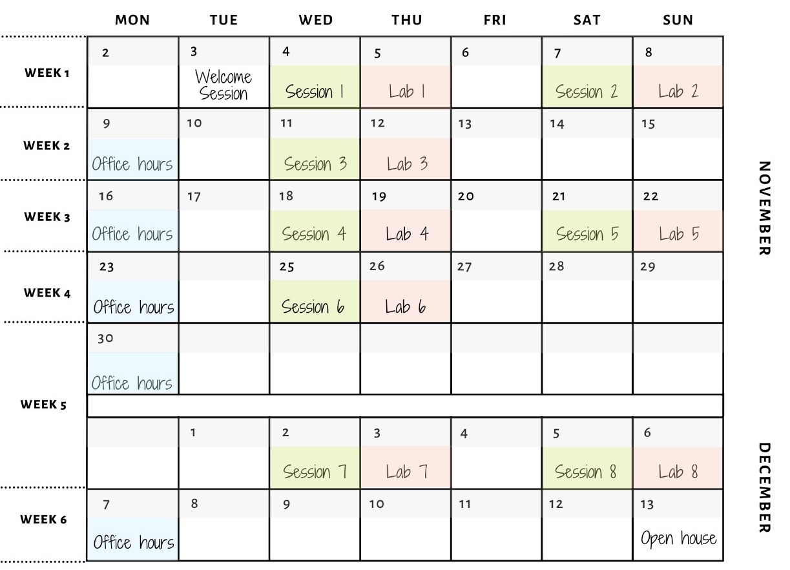

This lecture introduces concepts of neural networks. It will also cover optimization, backpropagation and simple Feed Forward (FF) Network, along with Neural Network Architecture, design Choices.
This lecture primarily deals with a few more key neural network concepts such as Backpropagation and Optimizers.
This lecture dives into Regularization for Neural Networks, dropout, and batch normalization.
This lecture predominantly deals with Convolutional Neural Networks: basic concepts and architectures.
This lecture kicks off with Convolutional Neural Networks again but with a focus on receptive fields, strides, etc.
This lecture revisits the concept of Convolutional Neural Networks but with a focus on the state of the art networks used in latest image processing models.
This lecture begins the idea of Transfer Learning and how to improve CNN training using pre-trained models.
This lecture will help you learn more about Auto-encoders and its practical applications.
PROJECT DUE DATE - 13/12/2020 23:59 IST